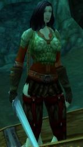

Les Terres de Kirin Tor
Aldherianne
Points : 6

Joué par :
[ Information masquée ]
Age : 19
Lieu de naisance : Moulin-de-tarren
Signe de naissance : La dame du lac
Sexe : Femme
Race : Humain
Faction : Alliance
Formation : Guerrier
Niveau : 15
Guilde :
Artisanat 1 : Mineur
Artisanat 2 : Forgeron
Envoyer un MP
Informations hrp : La faculté c'est plutot cool sauf quand on a que 3h00 de cours par semaine ...WOW! MoD autiste ( mais pas trop ) ON !
Description : "On avait tous une vie avant, une histoire plus ou moins paisible et plus ou moins heureuse ... avant ..."
Je m'appelle Aldherianne ... Aldherianne Fairgiver. Je suis originaire de Moulin de Tarren dans les contreforts d'hillsbrad mais ça n'a plus vraiment d'importance maintenant que tout a changé...
Mon pere était un fiere guerrier du nom de Harkhennor, je n'ai plus vraiment de souvenir de lui mais je me souviens encore de ces talents incontesté de forgeron... Je passais des heures a le voir travailler le fer... Mais bon c'était avant...
Je ne vous raconterai pas l'histoire ou plutot le cauchemard que j'ai vécu car vous aussi vous l'avez vécu a votre manière. Le fléau ne nous concernait pas, il était loin, pour moi ou plutot pour nous tous ce n'était qu'une rhumeur, une histoire pour faire peur aux enfants. Et puis tout a changé, le fléau on en parlait a la taverne, on le lisait dans le journal puis c'est les sentinelles autour du village qui en parlaient et enfin on le voyait rentrer par les portes et les fenetres...
Apres je ne sais plus ...
La suite n'a qu'un mot pour la décrire... "Seule"
J'ai passé 4 ans cloitré a Nortshire ou j'ai pas ou peu parler et maintenant que je suis majeure je veu savoir ce qui sait passé a Moulin de tarren... Je n'ai aucune compétence ni aucun talent. Je sais me battre et je veu me battre...
Je n'ai plus rien ...
"Ne croisé jamais quelqu'un qui n'a plus rien a perdre"
Quatrième Ère [4]
Lune de la Force
Décade du Panda
Décade du Gorille
Décade de l'Ours
Lune d'Agilité
Décade du Tigre
Décade du Singe
Décade du Faucon
Lune de l'Esprit [4]
Décade de la Chouette
Décade de la Baleine
Décade du Lapin [4]
Le commencement
éh bien voila ... cela commence ...l'entrainement
Je suis presque étonné de commencer tellement j'attend de revoir cet lumiere qui m'a tant manqué depuis ces 4 longues années...
Je n'ai guere envi de t'expliquer ce qui c'est passé dans ma vie, il n'y a qu'a écouter les horreurs qui se sont passé depuis quelque années pour entre apercevoir l'enfance que j'ai connu...
Oui chere journal c'est aujourd'hui que je deviens une femme celon les lois de ce royaume qui n'est pas le mien . Je viens de clore 4 ans d'enfermement et de silence ce matin meme ...
J'ai franchi les portes de l'abbaye de northshire pour ne plus jamais les franchir cela je le jure ...
Mais que faire? Je suis seule et je ne connais personne, j'ignore tout des us et coutumes de cet région et je sais encore moin quoi faire pour survivre ... je n'ai que toi petit journal pour me soulager...
J'ai tout perdu et je devrais me laisser aller au désespoir ... mais non sa je ne le peu pas, je ne suis pas comme sa je dois me battre ! oui me battre pour survivre ...
C'est ma chance j'ai récuperer derriere le cimetiere une épée et un bouclier appartenant a je ne sais quel milicien décédé depuis peu ...
Mes petites main et bras vont devoir s'habituer au contact froid et dur de l'acier...
J'ai quelque facilité dans la maniement de la lame grace au bon conseil d'un garde qui ma pris sou son aile le temps d'une ronde...
Et bien voila comme je l'ai écris tout commence...
Je me nomme aldherianne et me voila guerriere que la lumiere porte mon destin vers la firmament ...
Chere journal , la solitude me pese serieusement et je suis peiné de ne trouver ame a qui parler...
J'ai bien tenté de me lié d'amitié avec une fille de Northshire, une certaine Alyia mais rien n'y fais mon contact avec elle est resté plus que évasif .
Chere journal,premier contact
les problemes ne manque pas par ici , je ne cesse depuis l'aube de courir par mont et par vaux pour aider les petites gens en quete de sécurité.
les lames manque en Elwynn et loué soit la lumiere j'ai pris la bonne route.
Pourtant c'est dur, mon corps n'est pas habitué a subir tant de difficultés, les combats m'éprouve et j'ai bien failli plus d'une fois mourir sous les griffes des loups ou sous les fourbes lames des défias ...
L'énemie sous toutes ses formes regne ici bas et je me dois de le combattre des que possible. La mort ne doit pas m'arreté! Je la connais bien maintenant, c'est meme une vieille amie, je l'ai vu emporté plusieur de mes camarades de combat...
La vie est dur ici bas pour nous pauvres mortel...mon seul réconfort et de rendre le sourir au paysans qui donne tout....
J'aurai du etre comme eux moi aussi ...
Mais tout a changer ....
Pour la lumiere ....
Ma réputation de redrésseuse de torts c'est étendu au dela de la foret d'elwynn. Je dois a présent me rendre dans la région de la marche de l'ouest ou mes énemies de toujours les défias regne en maitre la tache sera dur ...Lakeshire
La région est en proie a l'anarchie et la lumiere a bien du mal a percé dans cette région. Forte heuresement mon combat n'est plus aussi dur, je ne suis plus seul en effet.
J'ai fais la connaissance d'un noble paladin fiere défenseur de la lumiere du nom de lideln. Avec lui je me sens beaucoup moins seule. Les défias on beau etre nombreux et lache ils sont de bien pietre combattant. J'ai du pourfendre de ma lame un bon nombre de leur membre. Lideln n'a pas a rougir non plus. J'ai rendu le sourir et l'espoir a bien des fermiers aujourd'hui et cela sa n'a pas de prix.
Incroyable j'ai pu parlé a une elf du nom de tiffaine . Sa dexterité est bien superieur a la mienne et j'ai encore beaucoup a apprendre... Nous faisons route en ce moment pour lakeshire une région que je connais pas du tout... La encore l'orde regne que par la force des fieres défenseurs de l'alliance. La journée promet d'etre encore tres dur ...
Mes craintes étaient fondé les défias prépare un gros coup mais d'autre taches sont a remplir ici a lakeshire. Mes vieux amis les murlocs et les gnolls m'attende deja et aujourd'hui le sang coulera encore beaucoup..
J'ai été gravement bléssé a l'épaule et je suis tombé inconsciente ... j'ai été pris a parti par un groupe de gnoll qui m'a tendu une embuscade. Heuresement Tiffaine ma compagnon d'infortune m'a sauvé et je suis en ce moment meme a Goldshire pour etre soigné par l'aubergiste. Je n'ai qu'une hate c'est reprendre la route!
La douleur au bras est insuportable et j'ai peur d'etre immobilisé ...je me sens mal je...
J'ai apparement été empoisonné par les sombres poisons gnoll, j'ai été transporté da stormwind la derniere grande capitale et bastion de l'humanité... A la vue de tout ces monuments je ne peu qu'etre renforcé dans mon combat...Pourtant tout n'est pas aussi magnifique. Trouvez des combattants motivé pour se battre cela ne cours pas les plaines... J'ai passé bien des heures a allé de bars en tavernes pour trouver d'hypothétique compagnons de voyage mais rien n'y fais tout le monde est tourné vers l'effort de guerre d'HAhn Quiraj. Je n'arrête pas de croiser des détachements de l'armé de l'alliance qui parte défier les démons qui parcours cette terre. Des noms qui nétaient pour moi que des légendes fusent sur la place central de Stormwind.
Le spectacle est dantesque, partout des nains, elfes, humains tous plus majestueux et terribles les uns que les autres s'organise au Son des cris des officiers qui les encadres. Les jurons fusent, es guerriers fourbissent leur armes et caresse leur armes d'une manière presque érotique. Les éclaireurs flattent leurs familiers et compte leurs munitions. Les plasmodes des prêtres et des mages raisonnent doucement dans la tête. Malheureusement pour moi mon combat na rien de connu et rien de glorieux. Qui soccuperai du malheur des petites gens ? Qui ?
La guerre que je mène naura aucun monument et personne nécrira ce que je fais
Apres mes tentatives infructueuses de trouver des soldats pour se joindre a mes quêtes jai pris la route de Goldshire espérant croiser mon compagnon « Lideln » mais je neu aucune nouvelle de lui. Jabandonnais lidée de lattendre a lauberge car la journée était encore loin dêtre achevé. Je laissais une lettre pour « Lideln » au soin de laubergiste puis je repris la route pour Lakeshire.
Loin dêtre seulement longue la route pour Lakeshire était aussi très dangereuse jen avais fais les frais le matin même.